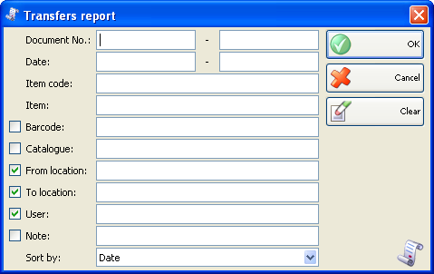
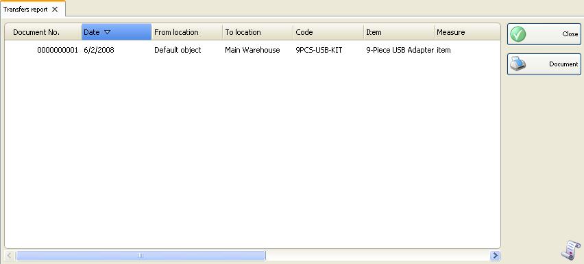

Raport transferuri
Folositi Raportul transferuri pentru a urmari ci controla transferul documentelor. Fiecare rand in document corespunde unui rand din raport. Astfel raportul afiseaza circulatia articolelor de la o localizare la alte.
In prima fereastra a raportului se pot specifica criteriile de filtrare si campurile care se vor vizualiza.
Numai randurile bifate se vor vizualiza in raport.

Se pot allege filtrari pentru fiecare camp prin apasarea tastei� F4.
Se poate limita raportul la un singur criteriu de filtrare � de exemplu, vizualizare transferuri� pentru un singur articol sau se pot aplica mai multe criterii de filtrare in acelasi timp � de exemplu, vizualizare transferari pentru un articol anumit de la o anumita localizare si o anumita perioada de timp.
Se poate selecta un criteriu de sortare cu �Sort� din partea de jos a listei. Puteti alege dintre data document, nume articol si cod articol.
Pentru stergerea filtrarilor specificate, click pe butonul Clear. In aceasta situatie raportul va afisa toate operatiile fara nici o restrictie.
Click pe butonul OK pentru a genera raportul dupa specificarea criteriilor de filtrare. Click pe butonul Cancel pentru inchiderea ferestrei.

Raportul transferuri contine informatii despre toate articolele transferate de la o localizare la alta. Sunt afisate numar document, data si utilizatorul cate a efectuat operatiunea.
�2006-2012 Microinvest, All rights reserved